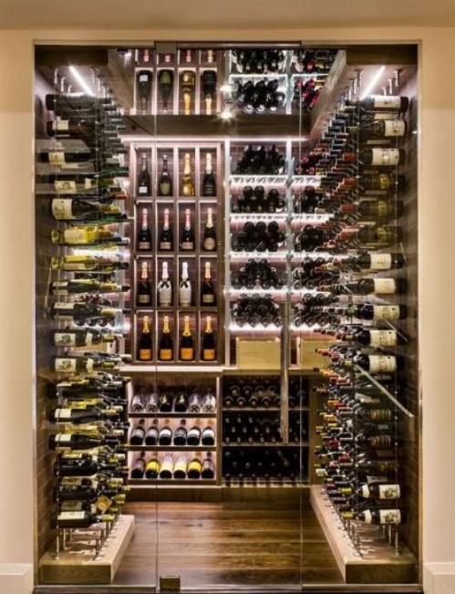

Tradição, conhecimento e paixão pelo mundo dos vinhos
A Vinharia Agnello atua há mais de 15 anos em São Paulo, oferecendo uma ampla variedade de vinhos nacionais e internacionais.
É uma empresa familiar, administrada por Giulio e sua filha Bianca.
Com o impaco da pandemia, muitos clientes migraram para o ambiente online.
Agora, a Vinharia Agnello está em processo de transformação digital, buscando criar um e-commerce que mantenha a qualidade do atendimento presencial.
Este sistema foi desenvolvido em JavaScript para gerenciar o acervo de vinhos da Vinheria Agnello. Por meio de objetos e arrays, o sistema armazena informações como nome, tipo, safra e estoque de cada vinho. Utilizando funções de alta ordem como forEach, filter, reduce e map, é possível listar todos os vinhos disponíveis, identificar produtos com estoque baixo, calcular o total de garrafas em estoque e exibir os nomes dos vinhos em destaque. Todos os resultados são exibidos no console do navegador ao executar o sistema.
